CalSense pairs a sensor-embedded insole with AI-driven analytics to deliver continuous plantar pressure monitoring — turning everyday steps into early warnings for diabetic foot ulcers, stress fractures, and musculoskeletal injury.

Diabetic foot ulcers and lower-extremity overuse injuries share a root cause: pressure that goes unnoticed until damage is already done. [Placeholder copy — replace with company-approved framing.]
People worldwide affected by diabetic foot ulcers each year
Diabetes-related amputations performed in the US annually
5-year mortality rate associated with a diabetic foot ulcer
Ulcer recurrence rate within 5 years of healing
Source: placeholder figures drawn from internal DFU market research — verify and cite before publishing.
Slide it into any conventional shoe. 160 embedded pressure sensors and a 6-axis IMU continuously capture plantar pressure distribution and motion, streaming insight over Bluetooth to a companion mobile app — no clinic visit required.
The same continuous-monitoring core powers two very different missions. [Placeholder — refine positioning per go-to-market strategy.]
Continuous, at-home plantar pressure monitoring designed to catch diabetic foot ulcer risk before Stage 2 — extending the reach of overburdened podiatry and wound-care providers.
View Clinical Use Case →Real-time gait and load monitoring to reduce musculoskeletal injuries, protect force readiness, and extend continuous care to veterans managing diabetes and limb preservation.
View Military Use Case →160 pressure sensors + IMU capture continuous plantar data inside the shoe.
Data streams wirelessly over Bluetooth LE to the CalSense mobile app.
AI-driven analytics turn raw pressure maps into risk scores and trends.
Users and providers get actionable feedback to relieve pressure before harm occurs.
Whether you're a clinician, a program manager, or an early partner, we'd love to show you what continuous plantar pressure monitoring can unlock.